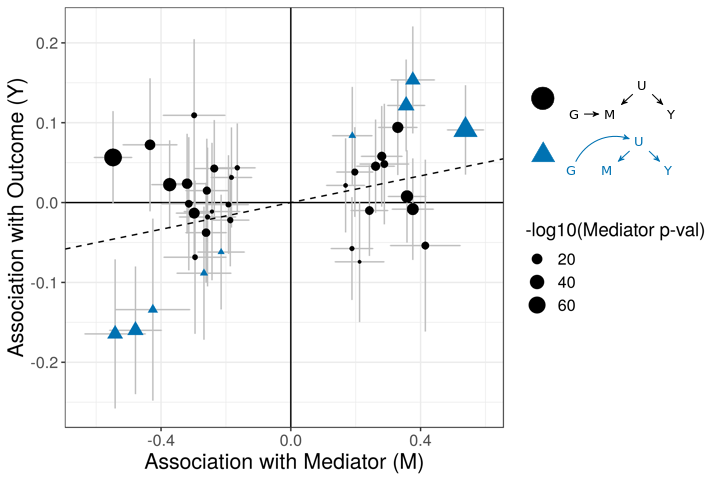
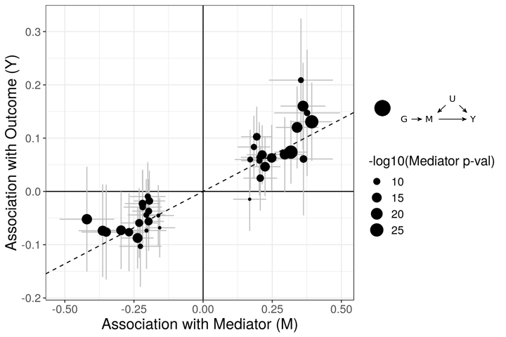

Last updated: 2021-09-14
Checks: 2 0
Knit directory: cause/
This reproducible R Markdown analysis was created with workflowr (version 1.6.2). The Checks tab describes the reproducibility checks that were applied when the results were created. The Past versions tab lists the development history.
Great! Since the R Markdown file has been committed to the Git repository, you know the exact version of the code that produced these results.
Great! You are using Git for version control. Tracking code development and connecting the code version to the results is critical for reproducibility.
The results in this page were generated with repository version f183b4c. See the Past versions tab to see a history of the changes made to the R Markdown and HTML files.
Note that you need to be careful to ensure that all relevant files for the analysis have been committed to Git prior to generating the results (you can use wflow_publish or wflow_git_commit). workflowr only checks the R Markdown file, but you know if there are other scripts or data files that it depends on. Below is the status of the Git repository when the results were generated:
Ignored files:
Ignored: .Rhistory
Ignored: .Rproj.user/
Ignored: ll_v7_notes.Rmd
Ignored: ll_v7_notes.html
Ignored: pipeline_code/ld/
Ignored: pipeline_code/plink_reference/
Ignored: pipeline_code/raw_data/
Ignored: sim_results/
Ignored: src/RcppExports.o
Ignored: src/cause.so
Ignored: src/log_likelihood_functions.o
Ignored: tests/
Untracked files:
Untracked: .Rhistory (tumble-track's conflicted copy 2021-07-15)
Untracked: analysis/mrcieu.Rmd
Untracked: cause.Rcheck/
Untracked: example_data/chr22_AF0.05_0.1.RDS
Untracked: example_data/chr22_AF0.05_snpdata.RDS
Unstaged changes:
Deleted: analysis/figure/simulations.Rmd/plot_fp-1.png
Deleted: analysis/figure/simulations.Rmd/roc-1.png
Deleted: analysis/figure/simulations.Rmd/unnamed-chunk-3-1.png
Deleted: analysis/figure/simulations.Rmd/unnamed-chunk-5-1.png
Deleted: analysis/figure/simulations.Rmd/unnamed-chunk-6-1.png
Modified: src/RcppExports.cpp
Note that any generated files, e.g. HTML, png, CSS, etc., are not included in this status report because it is ok for generated content to have uncommitted changes.
These are the previous versions of the repository in which changes were made to the R Markdown (analysis/index.Rmd) and HTML (docs/index.html) files. If you’ve configured a remote Git repository (see ?wflow_git_remote), click on the hyperlinks in the table below to view the files as they were in that past version.
| File | Version | Author | Date | Message |
|---|---|---|---|---|
| Rmd | f183b4c | Jean Morrison | 2021-09-14 | wflow_publish(“analysis/index.Rmd”) |
| html | da5b784 | Jean Morrison | 2020-11-13 | Build site. |
| Rmd | c7a1cb4 | Jean Morrison | 2020-11-13 | refactor website |
| html | 1673e54 | Jean Morrison | 2020-02-09 | Build site. |
| Rmd | ecffe6d | Jean Morrison | 2020-02-09 | wflow_publish(“analysis/index.Rmd”) |
| html | 70e2b97 | Jean Morrison | 2019-12-04 | Build site. |
| html | a1c2e09 | Jean Morrison | 2019-10-15 | Build site. |
| html | 8bbb516 | Jean Morrison | 2019-07-15 | Build site. |
| Rmd | 86ffddd | Jean Morrison | 2019-07-15 | wflow_publish(c(“analysis/index.Rmd,” “analysis/simulations.Rmd”)) |
| html | 3503536 | Jean Morrison | 2019-07-12 | Build site. |
| Rmd | 8fbc50c | Jean Morrison | 2019-07-12 | wflow_publish(“analysis/index.Rmd”) |
| html | f3d82d3 | Jean Morrison | 2019-07-11 | Build site. |
| Rmd | fdcf760 | Jean Morrison | 2019-07-11 | wflow_publish(“analysis/index.Rmd”) |
| html | 09acd92 | Jean Morrison | 2019-07-11 | Build site. |
| Rmd | a5de9b2 | Jean Morrison | 2019-07-11 | wflow_publish(“analysis/index.Rmd”) |
| html | 5e4c977 | Jean Morrison | 2019-07-09 | Build site. |
| Rmd | 237d888 | Jean Morrison | 2019-07-09 | wflow_publish(“analysis/index.Rmd”) |
| html | 4a40efa | Jean Morrison | 2019-06-26 | Build site. |
| Rmd | 6f137f1 | Jean Morrison | 2019-06-26 | wflow_publish(“analysis/index.Rmd”) |
| html | 3b5c7e2 | Jean Morrison | 2019-06-25 | Build site. |
| Rmd | a55827d | Jean Morrison | 2019-06-25 | wflow_publish(files = c(“analysis/index.Rmd,” “analysis/ldl_cad.Rmd”)) |
| html | cb84ab2 | Jean Morrison | 2019-06-25 | Build site. |
| Rmd | a54a556 | Jean Morrison | 2019-06-25 | wflow_publish(files = c(“analysis/index.Rmd”)) |
| html | 6b826d9 | Jean Morrison | 2019-06-25 | Build site. |
| html | 286f4e9 | Jean Morrison | 2019-06-25 | Build site. |
| Rmd | 8f3b82e | Jean Morrison | 2019-06-25 | wflow_publish(files = c(“analysis/about.Rmd,” “analysis/index.Rmd,” “analysis/ldl_cad.Rmd,” “analysis/license.Rmd,” |
| Rmd | 24510f1 | Jean Morrison | 2018-10-22 | small language changes |
| html | 46b159a | Jean Morrison | 2018-10-17 | Build site. |
| Rmd | 19edfa4 | Jean Morrison | 2018-10-17 | wflow_git_commit(“analysis/index.Rmd”) |
| html | f15238b | Jean Morrison | 2018-10-14 | Build site. |
| Rmd | d163752 | Jean Morrison | 2018-10-14 | update about and index |
| Rmd | efc43ef | Jean Morrison | 2018-10-14 | Start workflowr project. |
Here are some useful links
Slides! from WNAR 2019
CAUSE is a Mendelian Randomization method using genome-wide summary statistics. CAUSE models correlated and uncorrelated horizontal pleiotropy in order to avoid false positives that can occur using other methods. Read a short introduction to the method below. In the tabs you can find a tutorial about using our software, some simulation results and an example of a larger data analysis.
Mendelian randomization (MR) is a method for inferring causal effects from observational data by using genetic variants as insturmental variables. The key idea of MR is to treat genotypes as naturally occurring “randomizations” (Smith and Hemani (2014),Boef, Dekkers, and Le Cessie (2015),Zheng et al. (2017)). Suppose we are interested in the causal effect of trait \(M\) (for “Mediator”) on trait \(Y\). The simplest MR methods assume that we can identify a genetic variant \(G_j\), that meets two assumptions:
These assumptions are illustrated in the following figure:
Here we have divided assumption 2 into two parts. First the variant may not affect any confounders/shared factors that act on both \(M\) and \(Y\) (correlated pleiotropy) and second, the variant cannot have any affects on \(Y\) through a non-shared mechanism (uncorrelated pleiotropy).
If these assumptions hold thenthe associations of \(G_j\) with traits \(M\) and \(Y\) will satisfy
\[ \beta_{Y,j} = \gamma \beta_{M,j}, \] where \(\beta_{Y,j}\) is the association of \(G_j\) with \(Y\), \(\beta_{M,j}\) is the association of \(G_j\) with \(M\) and \(\gamma\) is the causal effect of \(M\) on \(Y\). This relationship is the core of simple MR methods. Many methods based on Equation , including the commonly used inverse variance weighted (IVW) regression, first obtain estimates of \(\beta_{Y,j}\) and \(\beta_{M,j}\) for several genetic variants \(G_j\), and then estimate \(\gamma\) by regressing the estimates of \(\beta_{Y,j}\) on the estimates of \(\beta_{M,j}\) (Burgess, Dudbridge, and Thompson (2016)).
Correlated and uncorrelated pleiotropy are both forms of what has been previously termed horizontal pleiotropy. However, they have different effects on MR estimators. In uncorrelated pleiotropy, horizontal pleiotropic effects of variants are uncorrelated with effects on \(M\). This adds a noise term to the relationship above. On the other hand, when some variants exhibit correlated pleiotropy, this can induce an average correaltion between effect estimates even when the causal effect is equal to zero. This makes correlated pleiotropy more difficult to account for.
Several proposals have been made for accounting for horizontal pleiotropy in MR. However, most of these rely on the assumption that all horizontal pleiotropy is uncorrelated. These include Egger regression (Bowden, Smith, and Burgess (2015),Barfield et al. (2018)) which adds an intercept term to the regression of \(\hat{\beta}_{Y,j}\) on \(\hat{\beta}_{M,j}\), and several methods that rely on outlier removal including GSMR (Zhu et al. (2018)) and MR-PRESSO (Verbanck et al. (2018)). Another proposal, the weighted median estimator(Bowden et al. (2016)), makes no assumptions about the form of horizontal pleiotropy but assumes that fewer than half the variants exhibit horizontal pleiotropy.
The figures below demonstrate how correlated pleiotropy can lead to false positives using simple MR methods. On the left we have simulated data with no causal effect but 15% of the variants have correlated pleiotropic effecgts on \(Y\) (blue triangles). Even though there are many variants with strong association with \(M\) and no association with \(Y\) (evidence against a causal effect) IVW regression obtains a \(p\)-value of 0.01. We would like to be able to distinguish this scenario from the scenario on the right. On the right, we have simulated data with a true causal effect. Effect estimates are correlated for all varaints.
  The purpose of CASUE is to distinguish the patterns created by correlated pleiotropy from those created by a causal effect while still accounting for uncorrelated horizontal pleiotropy. We can also account for sample overlap in the GWAS of traits \(M\) and \(Y\) and we can avoid some other probelems encountered by simple MR by modeling uncertainty in effect sizes rather than pre-selecting variants with strong evidence of affecting trait \(M\).
CAUSE uses a mixture model for variants included in the analysis. We assume that a proportion \(q\) of variants exhibit correlated pleiotropy (the blue triangles in the figure above) while the rest do not. Correlated pleiotropic variants have the causal diagram on the right in the figure below. The remaining variants have the causal diagram on the left.
Note that we allow all variants to have uncorrelated pleiotropic effects (\(\theta_j\)). To make the model identifiable and to encourage parsimoniuos solutions, we assume that \(q\) is small. This assumption is encoded in a prior on \(q\) that places most of its weight on small values (\(q\sim~\)Beta\((1, 10)\) by default). If \(Z_j\) is an indicator that variant \(G_j\) is a correlated pleiotropic variant then the model above implies that
\[ \beta_{Y,j} = \underbrace{\gamma \beta_{M,j}}_{\text{causal effect}} + \underbrace{Z_j \eta \beta_{M,j}}_{\substack{\text{correlated}\\ \text{pleiotropy}}} + \underbrace{\theta_j}_{\substack{\text{uncorrelated}\\ \text{pleiotropy}}}. \] This relationship is the core idea of CAUSE. We estimate posterior distributions of \(\gamma\), \(\eta\) and \(q\) and compare the fit of posteriors from models with and without a causal effect. Our software provides posterior distribution estimates under two models: The sharing model in which \(\gamma\) is fixed at 0 and the causal model, which allows \(\gamma\) to be a free parameter. It also provides a test that the posteriors estimated under the causal model fit the data significantly better than posteriors estimated under the sharing model. If this is the case, we conclude that the data are consistent with a causal effect, or in other words, show the pattern of the right hand scatter plot above. For more details on model fitting and comparison, check out the paper! For details on running the software, look at the tutorial tab above.